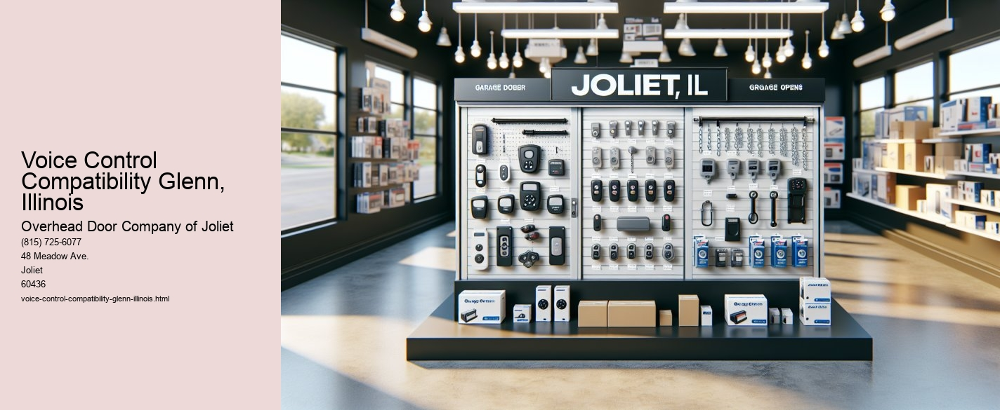

Serving Joliet, IL and surrounding Will County communities including:
Authorized Dealer for Overhead Door™ Openers and Accessories.

Voice control technology has become an integral part of modern living, offering a level of convenience and accessibility that was once the stuff of science fiction. In Glenn, Illinois, a small yet vibrant community, the adoption of voice control compatibility has been steadily rising, reflecting broader trends seen across the nation. This essay explores the various facets of voice control compatibility in Glenn, Illinois, examining its impact on daily life, its potential to bridge accessibility gaps, and the challenges it presents.
In recent years, voice control technology has evolved dramatically, finding its way into homes, cars, and even public spaces. In Glenn, Illinois, this trend is evident in the increasing number of households equipped with smart devices like Amazon Echo, Google Home, and Apples Siri. These devices allow residents to control various aspects of their environment, from adjusting the thermostat to playing music, simply by using their voice. This convenience is particularly appreciated in a community where residents juggle busy lives, balancing work, family, and leisure.
Beyond mere convenience, voice control technology in Glenn serves a more profound purpose by enhancing accessibility for individuals with disabilities. For those with mobility impairments or visual impairments, traditional interfaces like touchscreens can pose significant challenges. Voice control compatibility offers an alternative that empowers these individuals, allowing them to interact with technology in a way that is both intuitive and accessible. In Glenn, local initiatives have been launched to promote the use of voice-activated devices in public spaces, ensuring that everyone, regardless of ability, can participate fully in community life.
However, the widespread adoption of voice control compatibility does not come without its challenges. Privacy concerns are a significant issue, as these devices are constantly listening for commands and, in doing so, may inadvertently record personal conversations. Residents in Glenn, like elsewhere, are becoming increasingly aware of these risks and are seeking ways to balance the benefits of voice control with the need to protect their privacy. Educating the community about responsible use and the importance of updating device security settings is crucial in addressing these concerns.
Moreover, the digital divide remains a barrier to universal access to voice control technology in Glenn. While many households embrace these advancements, others are left behind due to financial constraints or lack of digital literacy. Community leaders and local organizations are working to bridge this gap, offering workshops and resources to ensure that all residents can benefit from the technological advancements that voice control compatibility brings.
In conclusion, voice control compatibility in Glenn, Illinois, is a microcosm of a larger technological evolution reshaping how we interact with our surroundings.
Smartphone Integration Glenn, Illinois